- Below is a Sequence AVL Tree
T. PerformT.delete_at(8)and draw the tree after each rotation operation performed during the operation.

-
In any undirected graph $G = (V, E)$, the eccentricity $\varepsilon(u)$ of a vertex $u \in V$ is the shortest distance to its furthest vertex $v$. That is, $\varepsilon(u) := \max\{\delta(u,v) | v\in V\}$ where $\delta(a, b)$ denotes the shortest path length between two nodes $a$ and $b$. The radius $R(G)$ of an undirected graph is the smallest eccentricity of any vertex, i.e., $R(G) := \min\{\varepsilon(u) | u \in V \}$.
a. Given a connected undirected graph $G$, describe an $O(|V||E|)$ time algorithm to determine the radius of $G$.
b. Given a connected undirected graph $G$, describe an $O(|E|)$ time algorithm to determine an upper bound $R^*$ on the radius of $G$ such that $R(G) \le R^* \le 2R(G)$. Give a proof of correctness.
-
We have a list of $n$ tuples of the form $(s, x, +)$ or $(s, x, -)$ where $x$ is a 64-bit unsigned integer and $s$ is a string. You can pretend these are the opinions of residents about their mayor. For example, the opinion (“Jon”, 10, -) means resident Jon is 10 units against the mayor. Each resident appears in at most one tuple. This list is read-only. You cannot write to it. You want to generate a list of $\log n$ residents having the strongest opinions (so ranked by magnitude of $x$), breaking ties arbitrarily.
a. Describe an $O(n)$ time algorithm to generate this list.
b. Now assume you can only write to at most $O(\log n)$ space. Describe an $O(n \log \log n)$ time algorithm to generate the list. Note that if you could write to $O(n)$ space, you would have the first part.
-
We are keeping track of how many points each player scores in each game. A triple of integers $(r, p, g)$ means player $r$ scored $p$ points in game $g$. For example, the triple $(7, 10, 1)$ means player 7 scored 10 points in game 1. Maintain a set $D$ of such triples such that no two triples in $D$ share the same pair $(r, g)$. This means a player has at most one score per game. For example, $D$ cannot contain both $(7, 10, 1)$ and $(7, 3, 1)$, since that gives player 7 two scores in game 1. However, $D$ can contain both $(7, 10, 1)$ and $(3, 4, 1)$ (two players in the same game), or both $(7, 10, 1)$ and $(7, 2, 2)$ (the same player in two games). For each $r$ appearing in $D$, let $D_r := \{(p, g) \mid (r, p, g) \in D\}$ and define the average score of player $r$ as $$A(r) := \frac{1}{|D_r|} \sum_{(p, g) \in D_r} p.$$ Let $n = |D|$. Describe a data structure supporting each of the following operations in worst-case $O(\log n)$ time.
- $\mathrm{record}(r, p, g)$: remove any triple of the form $(r, q, g)$ from $D$, then add $(r, p, g)$.
- $\mathrm{clear}(r, g)$: remove the triple of the form $(r, q, g)$ from $D$, if one exists.
- $\mathrm{rank}(k)$: return the $r$ with the $k$-th largest $A(r)$, breaking ties arbitrarily.
For example, starting from $D = \emptyset$:
-
After $\mathrm{record}(7, 10, 1)$, $\mathrm{record}(3, 4, 1)$ and $\mathrm{record}(7, 2, 2)$: $D = \{(7, 10, 1), (3, 4, 1), (7, 2, 2)\}$, so $A(7) = (10 + 2)/2 = 6$, $A(3) = 4$ and $\mathrm{rank}(1) = 7$.
-
After $\mathrm{clear}(7, 1)$: $D = \{(3, 4, 1), (7, 2, 2)\}$, so $A(7) = 2$, $A(3) = 4$ and $\mathrm{rank}(1) = 3$.
-
After $\mathrm{record}(7, 20, 2)$: $D = \{(3, 4, 1), (7, 20, 2)\}$, so $A(7) = 20$, $A(3) = 4$ and $\mathrm{rank}(1) = 7$.
-
We have a network of routers connected by wires of various lengths. Wires carry signals in both directions. A few of the routers are special: they are plugged directly into the internet. We call these routers gateways. Every other router reaches the internet by sending its signal along wires to a gateway, and it always uses the closest one. The latency of a router is the total length of wire on the shortest route from it to a gateway. A gateway has latency 0.
Formally, let $G = (V, E)$ be an undirected graph with $|V| = n$, a set of gateways $S \subseteq V$, and a positive integer length $\ell(e)$ on each edge $e \in E$. Assume every vertex can reach at least one gateway, and that the total length of all edges is small: $\sum_{e \in E} \ell(e) \le 100n$. The latency of a vertex $v$ is $L(v) := \min_{s \in S} \delta(v, s)$, where $\delta(v, s)$ is the shortest path length between $v$ and $s$ using the edge lengths. Describe an $O(n)$ time algorithm to compute $\sum_{v \in V} L(v)$.
For example, take the network below with six routers, where the gateways are $S = \{a, f\}$ and the numbers are wire lengths.

- $L(a) = L(f) = 0$ since they are gateways.
- $L(b) = 1$, using the wire from $b$ to $a$.
- $L(c) = 3$. The wire from $c$ straight to $a$ has length 4, but the route $c \to b \to a$ has length $2 + 1 = 3$.
- $L(d) = 4$. Router $d$ is wired straight to gateway $f$, but that wire has length 6. The route $d \to e \to f$ has length $3 + 2 = 5$, and the route $d \to c \to b \to a$ has length $1 + 2 + 1 = 4$.
- $L(e) = 2$, using the wire from $e$ to $f$.
The answer is $0 + 1 + 3 + 4 + 2 + 0 = 10$.
Hint: BFS finds shortest paths when every edge has length 1. Can you turn $G$ into a graph where every edge has length 1, without making it too large?